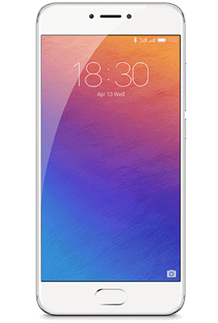

О компании
Phones является эксклюзивным официальным представителем компании MEIZU в России и странах СНГ. В рамках сотрудничества с MEIZU компания “Гермес Мобайл Дистрибьюшн” занимается дистрибуцией и продажей смартфонов, развитием и рекламным продвижением бренда MEIZU, а также поддержкой продукции, ее полной локализацией, адаптацией для внутреннего рынка и подготовкой к работе в сетях российских операторов связи.
Компанией открыты фирменные точки продаж смартфонов MEIZU в Москве и в Санкт-Петербурге. Сервисную поддержку оказывают специалисты собственного сервисного центра, так же партнерских сервисных центров более чем в 50 городах Российской Федерации.
Мы стремимся к расширению своей деятельности как на внутреннем рынке, так и на рынках государств Содружества, и приглашаем к сотрудничеству компании, которые желают продавать продукцию MEIZU в регионах России и в странах СНГ.
Phones является эксклюзивным официальным представителем компании MEIZU в России.
Новинки

Инновационная технология сенсорного ввода, прекрасное управление одной рукой, надежные компоненты и высокая скорость передачи данных – залог успеха нового, легкого и, вместе с тем, мощного Meizu PRO 6.
В абсолютно новом процессоре Helio X25 используется революционная 10-ядерная 3-кластерная архитектура. Ядра Cortex™-A72 и графический процессор Mali™-T880 в тандеме обеспечивают прекрасную работу и выдают более 100000 очков в Antutu. C флэш-памятью формата eMMC 5.1 и 4 ГБ оперативной памяти, Meizu PRO 6 хватит производительности для любой задачи. В устройстве также есть энергосберегающий алгоритм на уровне ядра. Интеллектуальная система может переключаться между тремя кластерами для поддержания баланса между энергосбережением и эффективностью работы.

Смартфон MX6 – первый смартфон в линейке MX-устройств, в котором используется 10-ядерный процессор Cortex-A72, гарантирующий высокую производительность и скорость обработки данных. В модели 4 ГБ оперативной памяти, что позволяет пользователям переключаться между приложениями, не теряя скорости.
Камера на базе сенсора Sony IMX386 обеспечивает безупречное качество съемки. Благодаря встроенному фазовому автофокусу в MX6 достигаются превосходные точность и скорость фокусировки.

Дисплей нового MEIZU U10 с диагональю 5 дюймов, выполненный по технологии полного ламинирования в сочетании с качественной IPS-матрицей, расширяет границы визуального опыта за счет максимально натуральной цветопередачи. Эргономичный дизайн позволяет комфортно управлять смартфоном одной рукой.
Элегантность, надежность и долговечность MEIZU U10 достигаются за счет эффективного сочетания стекла и металла. В четко очерченном корпусе установлено 2.5D-стекло со скругленным кантом. «Белый», «черный», «золотой» или цвет «розовое золото» – вы можете выбрать цветовое решение, отражающее именно ваше представление о прекрасном.